왜 CCA 시험을 보라고 할까요
Frank Coyle 교수는 30년 넘게 컴퓨터 과학을 가르쳐 왔고, 지금은 UC 버클리에서 강의해요. 요즘 학생들의 고민은 AI예요. 컴퓨터 과학 전공이 더는 취업으로 가는 확실한 길이 아니거든요. 그래서 학생들이 에이전틱 AI 시대에 대비할 방법을 찾다가 Claude Certified Architect(CCA) 시험을 만났다고 해요.
그가 이 시험을 권하는 이유는 단순해요. Anthropic은 사람들이 Claude를 실제로 어떻게 쓰는지, 어디서 문제가 생기는지 알고 있어요. 그러니 시험을 보지 않더라도 시험이 무엇을 묻는지만 훑어봐도 공부할 목록이 생긴다는 거예요.
실수는 없고, 만드는 것만 있어요
본론 전에 교육 철학을 먼저 꺼내요. 미술가이자 수녀였던 Sister Corita Kent의 규칙이에요.
Nothing is a mistake. There's no win and no fail. There's only make.
실수는 없어요. 이기는 것도 지는 것도 없어요. 만드는 것만 있어요.
— 영상 01:40
읽기만 하지 말고 직접 만들어 보라는 말이에요. 만들다 보면 대부분은 안 돌아가요. 연사는 에디슨의 '실패한 게 아니라 안 되는 방법 1만 가지를 찾았을 뿐'이라는 말을 이어서 꺼내요.
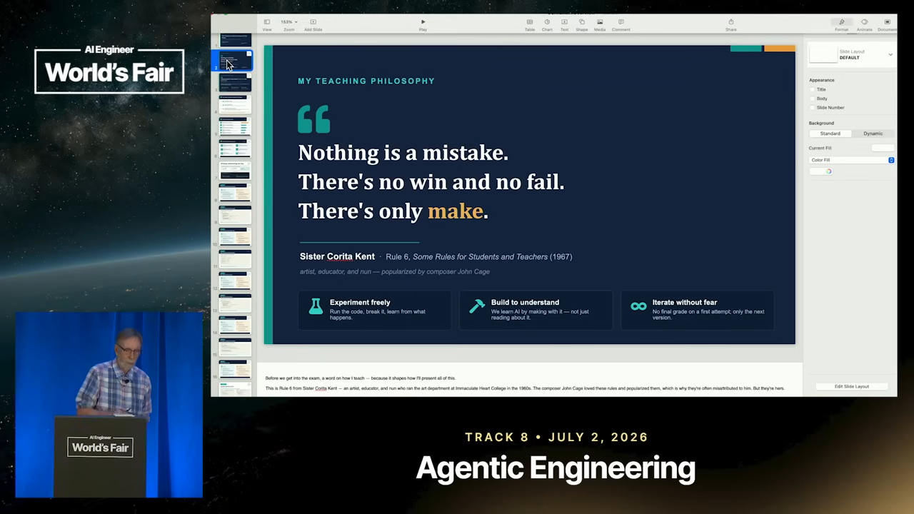
패턴만큼 안티패턴이 중요해요
1990년대 객체지향 프로그래밍과 함께 디자인 패턴 운동이 일어났어요. 지금은 에이전트에도 패턴이 있고, 그만큼 안티패턴도 있어요. 연사는 하지 말아야 할 것을 알아야 해야 할 것이 보인다고 말해요. 이 생각이 강연의 틀이 돼요. 시나리오마다 '하면 안 되는 것'을 먼저 짚고, 그다음 올바른 패턴을 보여 줘요.
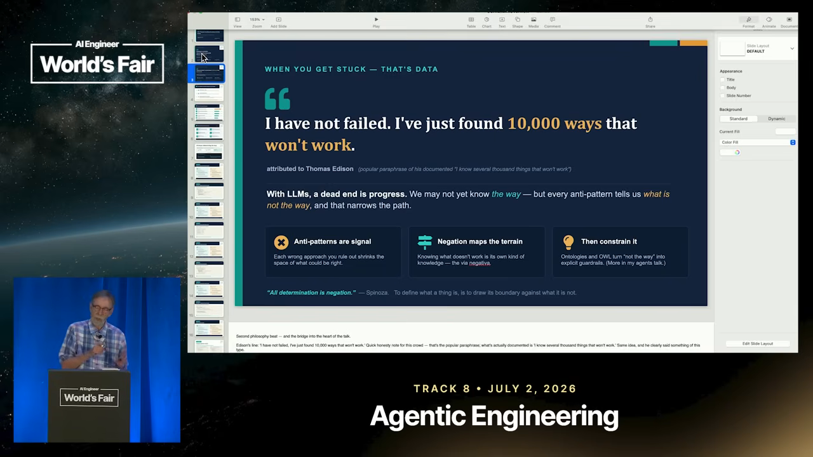
CCA 시험은 어떻게 생겼나요
CCA는 2026년 3월에 나온 Anthropic의 첫 공식 기술 자격증이에요. 연사가 띄운 슬라이드에 시험 형식이 정리돼 있어요.
- 2026년 3월 12일 출시, Claude Partner Network에 속한 자격증이에요.
- 120분 동안 객관식 60문제를 풀어요. 100~1,000점 척도에서 720점이면 합격이에요.
- 감독관이 있는 시험이고, 문제마다 '고장 난 루프', '범위가 엉성한 도구', '부하가 걸린 시스템' 같은 운영 상황이 주어져요. 외워서는 못 푼다는 게 슬라이드의 설명이에요.
연사는 Claude 생태계의 회사들이 볼 수 있고, 개인도 99달러를 내고 6개월에 한 번 응시할 수 있다고 말했어요.
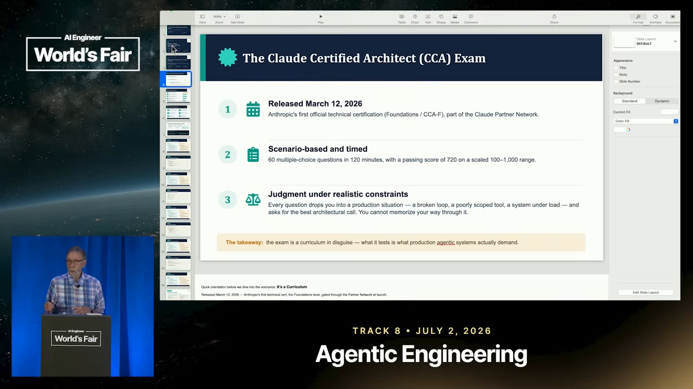
다섯 영역
시험 범위는 다섯 영역으로 나뉘고 비중이 정해져 있어요. 연사는 시험을 볼 생각이 없어도 이 주제들은 알아 둬야 한다고 강조해요. 에이전틱 세계가 무엇을 던지든 대비가 된다는 거예요.
| 영역 | 비중 | 슬라이드에 적힌 내용 |
|---|---|---|
| 에이전트 아키텍처·오케스트레이션 | 27% | 루프와 제어 흐름, stop_reason, 훅으로 거는 가드레일 |
| Claude Code 설정·워크플로 | 20% | CLAUDE.md 계층, 커스텀 명령과 스킬, CI/CD와 배치 |
| 프롬프트 엔지니어링·구조화 출력 | 20% | 명확한 지시와 성공 조건, tool_use와 JSON 스키마로 받는 구조화 출력 |
| 도구 설계·MCP 연동 | 18% | 좁고 고르기 쉬운 도구, 구조화된 오류, MCP 서버 설정 |
| 컨텍스트 관리·신뢰성 | 15% | 무엇을 앞에 두고 뒤에 둘지, 긴 세션의 요약과 성능 저하 |
여섯 시나리오 중 네 개
운영 시나리오가 여섯 개 있고, 시험마다 무작위로 네 개를 골라 모든 문제를 그 위에 얹어요. 강연은 앞의 다섯 시나리오를 차례로 다루면서 시나리오마다 함정이 되는 안티패턴을 먼저 짚어요. 문제를 푸는 길은 여러 개지만, 무엇을 하지 말아야 하는지 알면 정답이 잘 보인다는 거예요.
| 시나리오 | 다루는 것 | 이 문서 위치 |
|---|---|---|
| 1. 고객 지원 해결 에이전트 | 에이전트 루프 제어, stop_reason, 사람에게 넘기기 | 루프와 stop_reason |
| 2. Claude Code로 코드 생성 | CLAUDE.md 계층, 플랜 모드 | CLAUDE.md는 계층으로 |
| 3. 멀티 에이전트 리서치 시스템 | 허브 앤 스포크 구조, 도구 개수, 컨텍스트 격리 | 에이전트는 좁게, 컨텍스트는 조각만 |
| 4. Claude로 개발 생산성 | 하위 작업 격리, 컨텍스트 압축 | 하위 작업은 격리하고, 긴 세션은 압축 |
| 5. CI/CD용 Claude Code | 헤드리스 실행, JSON 출력, 배치 | CI/CD는 헤드리스로 |
| 6. 구조화 데이터 추출 | 스키마 강제, 검증, 확신도 기준 | 강연에서는 따로 다루지 않았어요 |
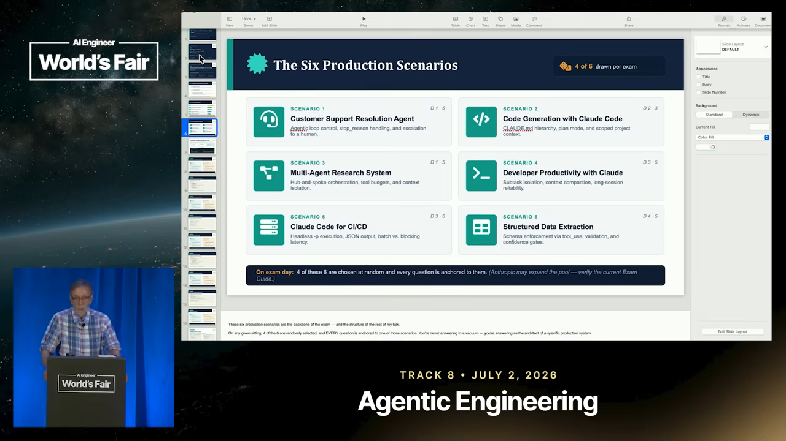
루프와 stop_reason
루프는 새로운 게 아니에요
요즘은 모두가 루프 이야기를 해요. Claude Code를 만든 Boris Cherny는 '내 일은 루프를 짜는 것'이라고 하고, OpenClaw를 만든 Peter Steinberger는 '에이전트에게 프롬프트를 던지는 루프를 설계한다'고 해요. 연사는 여기에 '아니요, 새로운 게 아니에요'라고 답해요.
프로그래밍 언어가 쏟아지던 시절, Fortran과 COBOL 진영이 서로 자기 언어가 더 많은 걸 할 수 있다며 싸웠어요. 1966년 Böhm과 Jacopini가 이 논쟁을 정리했어요. 순차 실행, if-then 조건, 반복 세 가지만 있으면 언어가 튜링 완전해진다는 걸 증명했죠. 그동안 LLM 활용은 프롬프트를 순서대로 잇거나 조건을 거는 정도였어요. 여기에 루프가 더해지면서 에이전트가 힘을 갖게 됐다는 게 연사의 해석이에요.
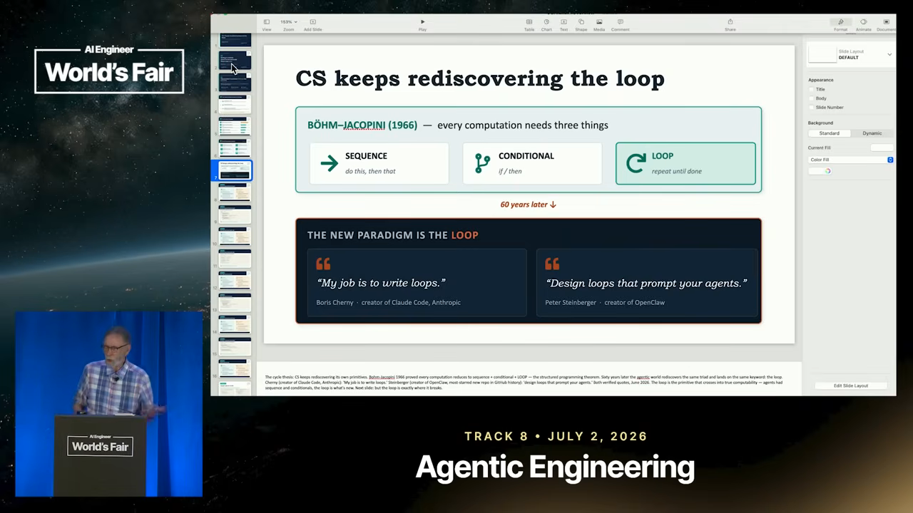
시나리오 1: 고객 지원 해결 에이전트
안티패턴은 에이전트를 한 번 불러서 돌아온 응답을 그대로 쓰는 거예요. 슬라이드는 이걸 'fire-and-forget'이라 불러요. stop_reason을 확인하지 않으면 루프가 작업 도중에 멈추거나, 도구를 실행해야 할 때 헛돌아요. 다른 안티패턴은 모든 걸 혼자 해결하게 두는 거예요. 환불 분쟁이나 계정 변경처럼 에이전트가 혼자 정하면 안 되는 일까지 처리해 버려요.
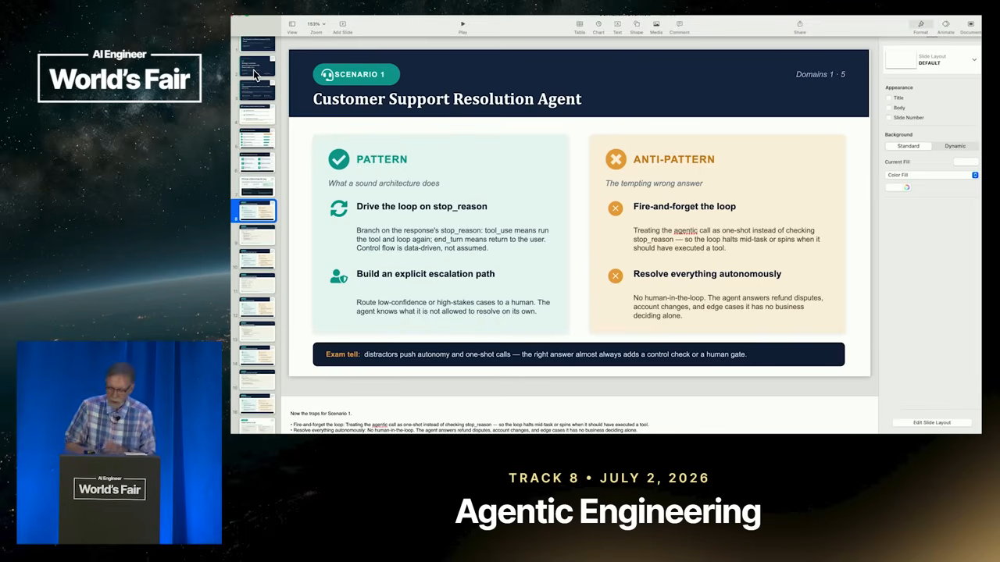
LLM은 도구를 실행하지 못해요
연사가 코드 앞에서 특히 강조한 점이 있어요. LLM은 확률적으로 다음 단어를 예측할 뿐이라서 도구를 직접 실행하지 못해요. 도구를 가리켜 주면 그 도구를 어떤 인자로 불러야 할지 정리해서 돌려줄 뿐이에요. 실행은 우리 코드가 해요. 그래서 루프는 매번 모델이 왜 멈췄는지 확인하고 분기해야 해요.
while True:
resp = client.messages.create(
model="claude-sonnet-4-6",
messages=messages, tools=tools)
if resp.stop_reason == "tool_use":
result = run_tool(resp) # 도구 실행, 결과 받기
messages.append(result) # 모델에게 돌려주기
continue # 다시 루프
elif resp.stop_reason == "end_turn":
answer = final_answer(resp)
if low_confidence(answer):
escalate_to_human(answer) # 사람에게 넘기기
break| stop_reason | 뜻 | 루프에서 할 일 |
|---|---|---|
tool_use | 모델이 도구를 쓰고 싶어서 멈췄어요 | 도구를 실행하고 결과를 메시지에 붙여 다시 돌아요 |
end_turn | 모델이 할 일을 마쳤어요 | 답을 받고 확신도를 확인해요. 낮으면 사람에게 넘겨요 |
| 토큰 소진 | 쓸 수 있는 토큰이 바닥나서 멈췄어요 | 답이 중간에 잘린 것이니 따로 조치해요 |
end_turn 뒤의 확신도 확인이 휴먼 인 더 루프를 넣을 자리예요. 연사는 토큰이 바닥난 경우도 꼭 확인하라고 덧붙여요. 그때 돌아온 답은 모델이 멈춘 시점까지만 쓴 부분 답이거든요.
CLAUDE.md는 계층으로
시나리오 2(Claude Code로 코드 생성)는 짧게 지나가요. Claude Code에는 CLAUDE.md라는 마크다운 파일이 있어서, Claude가 알아야 할 규칙을 여기에 적어요. 안티패턴은 모든 규칙을 파일 하나에 쏟아붓는 거예요. 디렉터리마다 다른 규칙이 서로 섞여서, 관계없는 작업에 끼어들고 조용히 충돌해요.
슬라이드의 또 다른 안티패턴은 모든 걸 바로 실행하는 거예요. 여러 부분을 건드리는 큰 변경이라면 먼저 플랜 모드로 계획을 받아서 검토한 뒤 코드를 손대게 하라는 거예요.
세 단계 계층
Anthropic이 권하는 방식은 범위에 따라 파일을 나누는 거예요. 연사는 프로젝트 최상위, 프로젝트 폴더, 그 안의 디렉터리 세 단계로 설명했고, 슬라이드 예시는 사용자 전체·프로젝트·디렉터리로 나눠요.
~/.claude/CLAUDE.md # 사용자 (모든 프로젝트)
"Prefer type hints. Explain before editing."
myrepo/CLAUDE.md # 프로젝트
"Use pytest. Never touch /legacy."
myrepo/api/CLAUDE.md # 디렉터리
"All endpoints async. Validate with Pydantic v2 models."/api 안의 파일을 고칠 때는 세 파일이 모두 적용되고, 충돌하면 디렉터리 규칙이 이겨요. 규칙이 실제로 적용되는 자리에 놓이니, 어떤 규칙이 우선인지도 분명해져요.
에이전트는 좁게, 컨텍스트는 조각만
시나리오 3(멀티 에이전트 리서치 시스템)의 질문은 이거예요. 에이전트들을 내보내서 일을 시키고, 그 답을 어떻게 쓸 만한 형태로 다시 모을까요. 누가 오케스트레이터를 맡고, 각 에이전트는 얼마나 알아야 할까요.
도구를 몰아주지 마세요
첫 안티패턴은 에이전트 하나에 도구를 잔뜩 실어 주는 거예요. 연사의 비유가 와닿아요. 집에 목수를 불렀는데 배관 공구, 목공 공구, 전기 공구를 다 들고 와서 뭐든 할 수 있다고 해요. 이런 사람보다는 전문 목수가 낫겠죠.
함수형 프로그래밍에서 함수는 한 가지 일만 해야 한다고 하잖아요. 에이전트도 도구 한두 개만 쥐고 한 가지 일을 하게 만들면 이기는 거예요. 슬라이드는 에이전트당 도구가 4~5개를 넘으면 추론 품질이 떨어진다고 적어 두고, 그럴 때는 도구 벨트를 키우지 말고 서브에이전트로 나누라고 해요.
컨텍스트를 새게 두지 마세요
두 번째는 에이전트의 컨텍스트가 메인 컨텍스트로 넘쳐흐르게 두지 않는 거예요. 컨텍스트는 토큰이고, 토큰은 돈이에요. 게다가 컨텍스트가 클수록 모델이 답을 내면서 더 헷갈려요. 100만 토큰 컨텍스트 창이 있다고 해서 다 넣으면 안 돼요. 넣을 것을 줄일수록 시스템이 더 정확해져요.
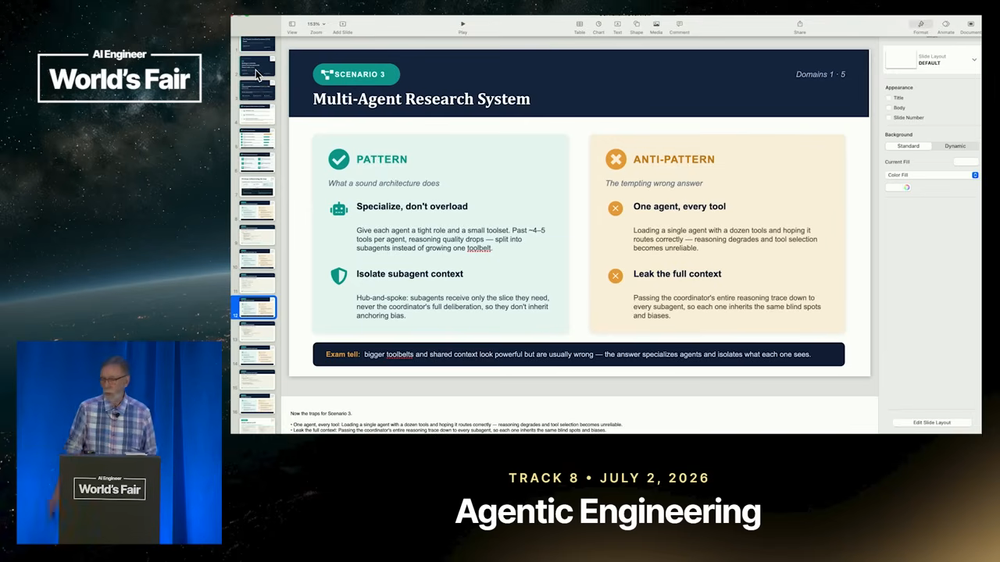
비평가에게는 주장과 근거만
예시는 비평가(critic) 서브에이전트예요. 어떤 작업을 돌린 뒤 결과를 다른 에이전트에게 검토시키는 상황이에요. 이때 비평가에게는 그 일에 필요한 것만 줘요. 주장과 근거만 넘기고, 그 주장을 만들어 낸 사고 과정은 넘기지 않아요.
def run_critic(claim, evidence):
# 메인 팀의 추론 과정은 넘기지 않고
# 검토할 주장과 근거만 넘겨요
return client.messages.create(
model="claude-sonnet-4-6",
system=CRITIC_ROLE, # 역할은 하나
tools=[verify_tool], # 도구도 하나
messages=[{"role": "user",
"content": fmt(claim, evidence)}])이유는 집단 사고예요. 에이전트 여럿이 같이 일하며 서로 이야기하면 모두 한 생각으로 쏠리는 경향이 있어요. 연사는 파티 비유를 들어요. 다들 피자를 먹자는데 나만 싫다고 하기 어려워서 그냥 따라가죠. 에이전트도 비슷하게 움직인다는 거예요. 그래서 에이전트마다 자기 몫의 조각만 줘야 해요. 연사도 말하고 나서 '피자 조각' 비유가 맞아떨어진다며 웃어요.
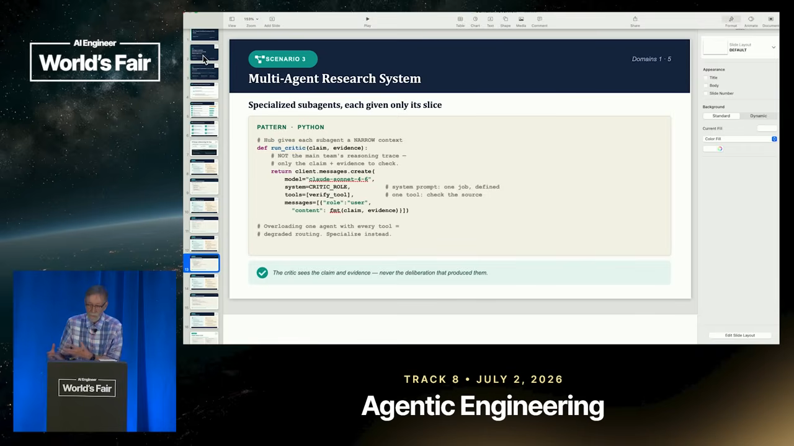
하위 작업은 격리하고, 긴 세션은 압축
시나리오 4(Claude로 개발 생산성)의 안티패턴은 앞 시나리오의 연장이에요. 하위 작업마다 출력을 통째로 메인 스레드에 쏟아 넣어서 정작 중요한 컨텍스트를 밀어내는 것, 그리고 컨텍스트가 끝없이 커지게 내버려 두는 것이에요. 이유는 방금 본 그대로예요. 토큰 비용이 늘고 모델이 헷갈려요.
연사는 이걸 멀티스레드 프로그래밍에 빗대요. 스레드들이 메모리를 공유하면 동기화 문제가 생기고 잠금을 걸어야 해요. 그러니 스레드를 서로 독립적으로 두라고 배우죠. 에이전트도 마찬가지로 각자의 작은 세계에 머물게 하라는 거예요.
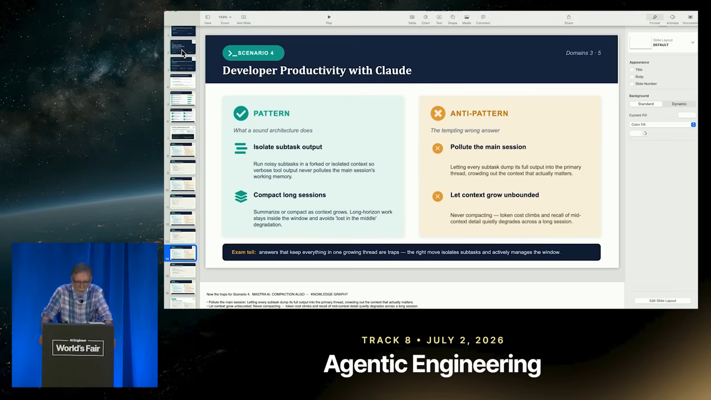
포크해서 돌리고, 요약만 받아요
예시는 로그를 훑어 오류가 어디서 났는지 요약하는 작업이에요. 이 일을 context="fork"로 별도 컨텍스트에서 돌려요. 서브에이전트가 무엇을 하고 무슨 생각을 하든 그 토큰은 메인 컨텍스트로 돌아오지 않아요. 끝나면 요약만 메인 메시지에 붙여요.
# 시끄러운 하위 작업은 자기 컨텍스트에서
summary = run_in_subagent(
task="scan all logs for the error",
context="fork") # 새 컨텍스트, 작업 내용만 받음
main_messages.append(summary) # 정리된 결과만 돌아옴
# 메인 스레드가 커지면 압축
if token_count(main_messages) > 150_000:
main_messages = compact(main_messages)
# 오래된 대화는 요약하고 최근 것은 그대로연사가 흥미롭다고 한 건 마지막 블록이에요. 토큰 수를 세다가 15만 토큰 같은 기준을 넘으면 압축을 돌려요. Anthropic과 Claude에는 큰 컨텍스트를 줄이는 압축 알고리즘이 있다고 하면서, 정확히 어떻게 구현됐는지는 자기도 잘 모른다고 솔직하게 말해요.
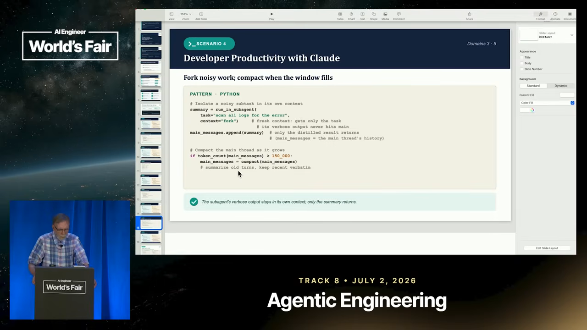
곁가지로, 행사장에서 나눠 주던 책 한 권도 소개해요. 그 책을 쓴 사람의 회사는 컨텍스트 압축 로직을 직접 정의할 수 있게 해 둬서, 기본 클래스를 확장해 무엇이 중요한지 스스로 정할 수 있다고 해요. 압축 방식을 꼭 남이 정한 대로 쓸 필요는 없다는 이야기예요.
CI/CD는 헤드리스로, 급하지 않으면 배치로
시나리오 5: 파이프라인에 대화형 모드는 금물
CI/CD용 Claude Code의 안티패턴은 파이프라인 안에서 대화형 모드를 쓰는 거예요. 대화형이면 Claude가 '이거 할까요, 저거 할까요, 이 권한 줘도 될까요?'라고 묻고 멈춰요. 파이프라인에서는 아무도 답하지 않으니 그대로 멈춰 버려요. 끝까지 쭉 돌게 설정하는 방법이 있다는 게 연사의 설명이에요.
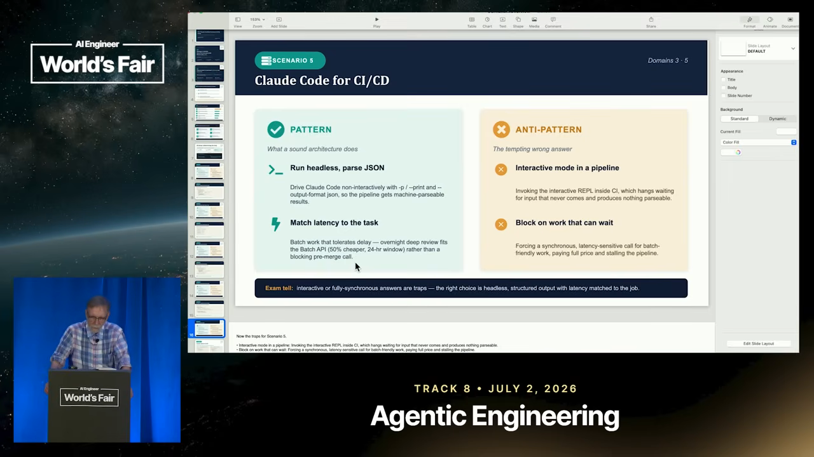
기다리는 사람이 없으면 배치로
또 하나의 팁은 Batch API예요. 프롬프트와 작업을 배치로 묶어 보내면 토큰 비용이 50% 줄어요. 연사는 결과가 '적어도 24시간'은 걸린다며, 낮잠을 자거나 휴가를 가거나 하루 쉴 때 배치로 돌려 두라고 해요.
슬라이드는 두 방식을 이렇게 나눠요.
| 방식 | 언제 | 특징 |
|---|---|---|
동기식 claude -p | 누군가 결과를 기다릴 때 (예: 머지 전 리뷰) | CLI로 한 번 실행하고 끝날 때까지 막아요. --output-format json으로 받아 다음 단계를 결정해요 |
| Batch API | 아무도 기다리지 않을 때 (예: 오늘 올라온 PR 전부 밤새 리뷰) | 별도 HTTP 엔드포인트로 비동기 처리해요. 50% 저렴하고, 24시간 이내예요 |
다시, 만드는 것만 있어요
시간이 다 된 연사는 처음 문장으로 돌아가요. 실수도, 승패도, 시험도 없고 만드는 것만 있다는 거예요. 직접 해 보고 만들어 보면 성공한다는 말로 강연을 마쳐요.
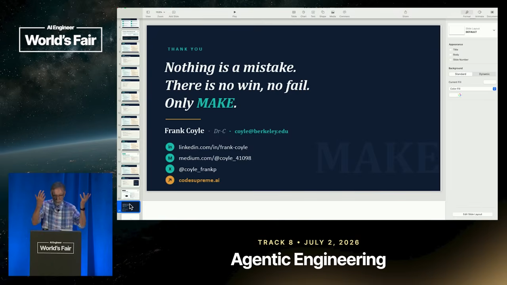